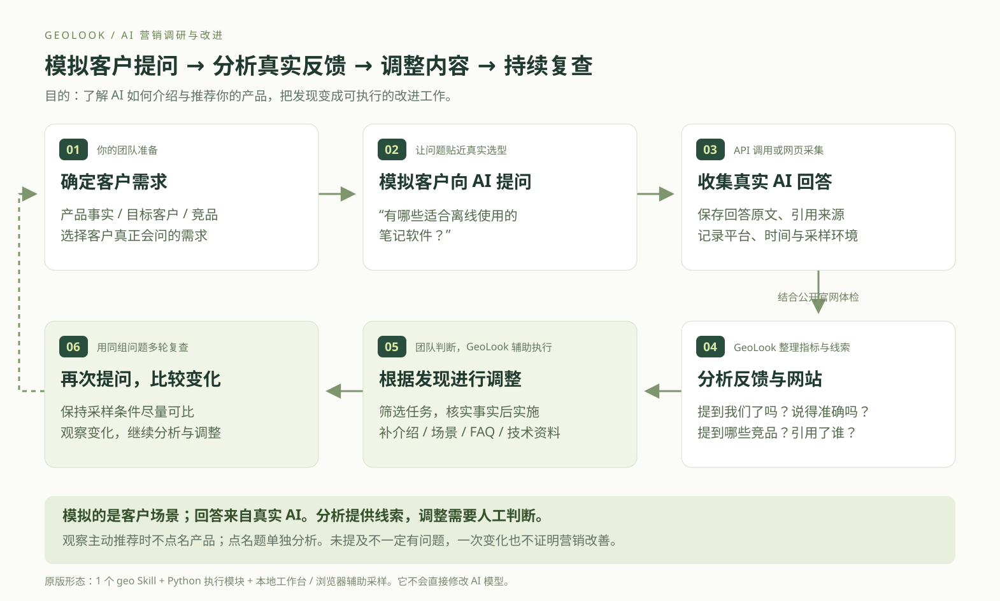

扮演客户提问，
记录 AI 的真实回答。
问题由团队按客户需求设计。网页回答与 API 回答可能不同，需要记录平台、时间、模型和联网等条件。
GeoLook 帮营销团队模拟客户向 AI 提问，收集真实回答，分析产品提及、竞品与引用来源，再根据发现调整内容和网站，持续复查。
模拟的是客户的提问场景；答案来自实际调用或采集的 AI。

准备自己的产品信息、竞品，以及客户会遇到的真实需求。
例如：“有哪些适合离线使用的笔记软件？”观察主动推荐时先不点名自己的产品。
通过 API 或网页采集，保存原文、来源和环境。不是编写一段模拟答案。
是否提及我们？出现哪些竞品？描述准确吗？引用了谁？结合官网检查寻找待验证的问题。
筛选适合产品定位的任务，核实后补充介绍、场景、FAQ 或技术资料，由团队实施。
保持问题和条件可比，多轮复查。没有改善就重新分析，不能把偶然变化当作效果。
离线 Markdown 场景里，AI 提到了 Obsidian；团队共享数据库场景里，这次没有提到。接下来先判断场景与产品是否匹配，再决定要改什么。
进入七步完整演示 →问题由团队按客户需求设计。网页回答与 API 回答可能不同，需要记录平台、时间、模型和联网等条件。
没被提及可能是需求不匹配、信息缺口或回答波动。GeoLook 结合采样与网站规则提供线索，团队判断哪些值得调整。
完善产品介绍、比较、场景说明和可读取性。它不会直接修改 AI 的模型参数，也不能保证推荐、排名或成交增长。